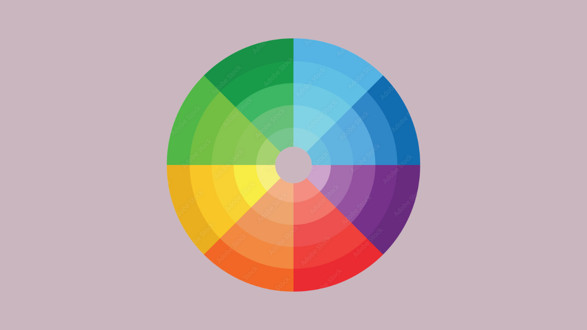
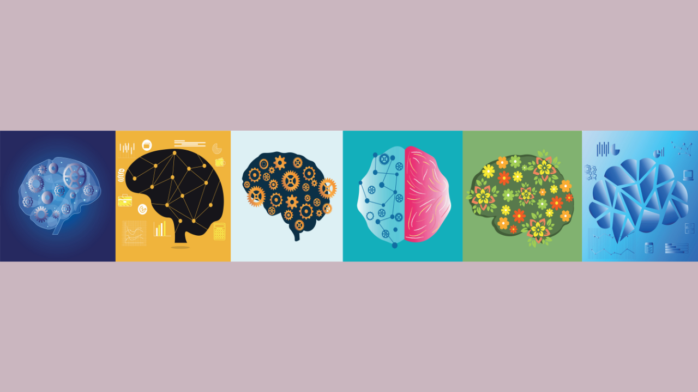

Choosing colors is an important part of the web design process that can make or break the final result. In this guide, we'll review color theory and psychology fundamentals and lay out a step-by-step process for creating color palettes for websites.
If you're a web designer who struggles to create color schemes for websites, you're not alone. Choosing colors may seem intuitive, but in fact there's a lot of strategy that goes into creating effective color palettes. Everyone has subjective opinions on different colors--some people love bold, bright colors like cherry red and neon green, whereas others gravitate towards soft pastels. The challenge for web designers is to look past their subjective views, and those of their clients, in order to choose colors strategically.
Fortunately, there are certain principles and methods that help make color choice a breeze for web designers. In this guide, we'll teach you how to take the guesswork out of choosing colors for your web design projects. First, we'll review the fundamental color theory and psychology principles every designer needs to know. Then, we'll spell out a simple 3-step process that’ll help you choose colors for websites like a pro.
Check out Ran Segall's video below for a 12-minute introduction to using colors in web design.
Why Choosing The Right Colors Is Important
You may be wondering: is color choice really that important for a website? The answer is a resounding yes. Good color choice promotes legibility, visual appeal, and brand recognition. Bad color choice, on the other hand, creates a poor user experience. As we all know, a poor user experience spells disaster for a business website.
Legibility
Color choice helps determine whether the content on a page is readable. Legibility is optimized with an appropriate level of color contrast between the text and the background. Too little contrast makes the text hard to read; too much contrast is hard on the eyes. A classic example of color contrast is black text on a white background. If you look closely, you'll notice that many websites actually use dark grey text on a white or off-white background in order to maximize legibility while minimizing eye strain.
Example of a website that uses appropriate contrast. Source: Vault
When referring to visual appeal in web design, we're not talking about subjective color opinions. Instead, the emphasis is on creating harmonious color palettes that are easy on the eyes. Choosing colors that have broad visual appeal requires an understanding of color theory. As we'll discuss in more detail later on, there are three types of color schemes that have universal appeal: monochromatic, complementary, and analogous. Recognizing and knowing how to create these color schemes makes choosing colors for websites easier and more effective.
Brand Recognition
Another important role of colors in a web design context is brand recognition. Many brands have a primary color (or two) that has a strong presence across their website, marketing materials, and other brand assets. Some classic examples that come to mind are Coca-Cola's red, the Starbucks green, and Ikea's high-contrast blue and yellow. Consistency is key for creating brand recognition through color. Later on, we'll see how color psychology comes into play when choosing primary brand colors.
Clip art from Canva, collage by Ashly Rico.
Using Color Theory To Choose Colors
Color theory is a practical framework for determining which colors work well together. The principles of color theory revolve around the color wheel, which visually portrays the relationships between different colors. The color wheel contains primary, secondary, and tertiary colors. It can also be divided into warm and cool colors. Familiarizing yourself with the color wheel is the first step to learning how to choose harmonious colors.
Example of a website with a monochromatic color scheme. Source: Anik Deb via Dribbble.
Color Schemes
A color scheme is a harmonious combination of colors. The three main types of color schemes designers should know about are monochromatic, complementary, and analogous. You could think of these schemes as sort of like templates for choosing colors. Let's look at each one in more detail.

Color wheel by Graphicroyalty.
Monochromatic
Monochromatic color schemes are based on a single hue ("mono" means one). Hues are primary and secondary colors, like red, yellow, and green. To create a monochromatic color scheme, you'd pick a hue, for instance blue, and use tints, shades, and tones to create a harmonious palette. Monochromatic colors tick the box for visual appeal, but be careful to create enough contrast for legibility.
For accessibility, choose hues that sit on opposite ends of the lightness scale to maximize contrast.
Complementary
Complementary color schemes consist of colors on opposite ends of the color wheel. For example, red and green or blue and orange. Complementary colors tend to contrast well and are therefore a popular choice for web design. However, the contrast can be striking and should therefore be used intentionally in order to ensure that the colors aren't too distracting.
Analogous
Analogous color schemes are made of colors that sit next to each other on the color wheel. These color schemes are inherently visually appealing, but as with monochromatic color schemes, be careful to create enough contrast for legibility. A tip for using an analogous color scheme on a website is to pair it with a neutral color like black or white in order to improve readability.
Once you have a good handle on color theory, creating harmonious color palettes becomes more intuitive. But which scheme is best for a given project, and how do you decide which sections of the color wheel to use? This is where color psychology comes into play.
Using Color Psychology To Choose Colors
Whereas color theory is centered on creating harmonious color schemes, color psychology is concerned with the feelings and emotions different colors evoke. Feelings and emotions may sound wishy-washy in a business context, but they actually play a critical role in branding, marketing, and sales. In fact, emotions are at the core of a consumer's decision making process (source).

Photo by Pixel-Shot.
Color Meanings
One way to incorporate color psychology when choosing colors for a website is through consideration of common color meanings. Different colors, both consciously and subconsciously, spark certain feelings. These feelings are largely influenced by cultural contexts, as well as personal experiences. Below are some examples of common color associations